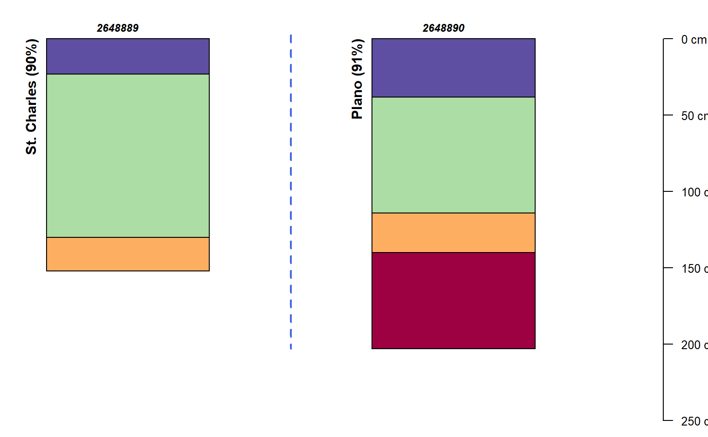

R/SDA_query.R
format_SQL_in_statement.RdConcatenate a vector to SQL IN-compatible syntax: letters[1:3] becomes ('a','b','c'). Values in x are first passed through unique().
format_SQL_in_statement(x)
| x | A character vector. |
|---|
A character vector (unit length) containing concatenated group syntax for use in SQL IN, with unique value found in x.
Only character output is supported.
# \donttest{ library(aqp) # get some mukeys q <- "select top(2) mukey from mapunit;" mukeys <- SDA_query(q)#># format for use in an SQL IN statement mukey.inst <- format_SQL_in_statement(mukeys$mukey) mukey.inst#> [1] "('2648889','2648890')"# make a more specific query: for component+horizon data, just for those mukeys q2 <- sprintf("SELECT * FROM mapunit INNER JOIN component ON mapunit.mukey = component.mukey INNER JOIN chorizon ON component.cokey = chorizon.cokey WHERE mapunit.mukey IN %s;", mukey.inst) # do the query res <- SDA_query(q2)#># build a SoilProfileCollection from horizon-level records depths(res) <- cokey ~ hzdept_r + hzdepb_r#># normalize mapunit/component level attributes to site-level for plot site(res) <- ~ muname + mukey + compname + comppct_r + taxclname # make a nice label res$labelname <- sprintf("%s (%s%s)", res$compname, res$comppct_r, "%") # major components only res <- filter(res, comppct_r >= 85) # inspect plot of result par(mar=c(0,0,0,0)) groupedProfilePlot(res, groups = "mukey", color = "hzname", cex.names=0.8, id.style = "side", label = "labelname")# }